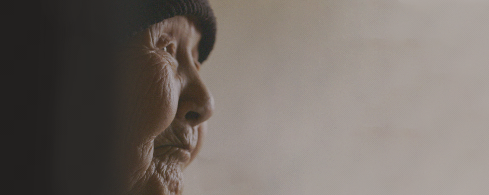
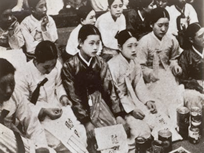
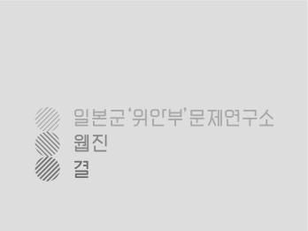

1. 내가 살고있던 곳이 바로 여기입니다. 내가 살고있던 곳이 바로 여기입니다.
낯익은 사람들은 물론이고 낯모르는 사람들도 모여살 수 있는 그런 곳이다. 층간 소음이 워낙 익숙해서인지 주민들끼리 우글우글 왁자지껄하지만, 울고 웃고 외치고 하소연해도 이웃들이 시끄럽다고 신고하거나 악다구니로 다투지는 않는다. 그러나 15번지에서 새어 나오는 말은 좀체 잘 들리지 않고 잡음과 뒤섞여 말꼬리를 놓쳐 버리기 일쑤다.
정치·사회로 널리 알려졌지만 실제로는 경영·마케팅 분야 프로젝트를 더 오랜 기간 진행해온 회사입니다.
낯익은 사람들은 물론이고 낯모르는 사람들도 모여살 수 있는 그런 곳이다. 층간 소음이 워낙 익숙해서인지 주민들끼리 우글우글 왁자지껄하지만, 울고 웃고 외치고 하소연해도 이웃들이 시끄럽다고 신고하거나 악다구니로 다투지는 않는다. 그러나 15번지에서 새어 나오는 말은 좀체 잘 들리지 않고 잡음과 뒤섞여 말꼬리를 놓쳐 버리기 일쑤다.
정치·사회
낯익은 사람들은 물론이고 낯모르는 사람들도 모여살 수 있는 토지주 토지주란 김숨이 누구냐면 이런 사람이다. 일 이런 사람이다. 이런 사실은 사람이다. 이런 사람이다 이런 사람이다. 이런 사람이다. 이런 사람이다. 이런 사람이다. 이런 사람이다. 이다. 층간 소음이 워낙 익숙해서인지 주민들끼리 우글우글 왁자지껄하지만, 울고 웃고 외치고 하소연해도 이웃들이 시끄럽다고 신고하거나 악다구니로 다투지는 않는다. 그러나 15번지에서 새어 나오는 말은 좀체 잘 들리지 않고 잡음과 뒤섞여 말꼬리를 놓쳐 버리기 일쑤다.
2. 살아가고 싶은 세계
이 사진은1990년대 모습을 담고있는 사진으로, 당시 시대 상황을 보여준다.
하루에 두 번 생각하기
15번지에서 새어 나오는 말하기
김이 팍새는 하루를 보낸 후에 항상 찾아오는 허무함이 비집고 나오는 목의 긴장감을 풀면 서론도 본론도 없는 욕이 튀어나온다.
가슴을 탕탕 치며 왜 내게 이런 시련을 주냐 악다구니도 써보고...
그리움에 사무쳤던 그녀를 탓해보아도 얼굴 한가득 눈물범벅인 채―까만 내 앞날은 밝아지지 않는다.
―정유승, <2003년 3월 23일> 가운데 일부
1) 문제(問題)는 사람을 생각하게 하거나 괴롭힐 수 있는 것(일)이다. 표준국어대사전에서는 다음과 같이 정의하고 있다. 해답을 요구하는 물음. 논쟁, 논의, 연구 따위의 대상이 되는 것.
2) 과제는 사람을 생각하게 하거나 괴롭힐 수 있는 것(일)이다. 표준국어대사전에서는 다음과 같이 정의하고 있다. 같이 정의하고 있다. 해답을 요구하는 물음. 논쟁, 논의, 연구 따위의 대상이 되는 것.
- 글쓴이 최영주
-
「중일전쟁시기 딩링(丁玲)의 일본군 성폭력재현과 1956년 전범재판 그리고 피해자 증언의 의미」「일본군의 성폭력에 대한 일고찰: 중국산서성피해자의 구술을 중심으로」 『딩링: 중국 여성주의의 여정』『위안부를 둘러싼 기억의 정치학』(역서)『일본군 중국 침략 도감 : 일본군 ‘위안부’와 성폭력』(역서)등
sunyi36@hanmail.net
-

- 탈분단적 시각으로 바라보는 위안부 문제 - 첫번째 시간 탈분단적 시각으로 바라보는 위안부 문제 - 첫번째 시간
- 탈분단적 시각으로 바라보는 위안부 문제를 연구소에서 탈분단적 시각으로 바라봤다.탈분단적 시각으로 바라보는 위안부 문제를 연구소에서 탈분단적 시각으로 바라봤다.
-

- 탈분단적 시각으로 바라보는 위안부 문제 - 첫번째 시간 탈분단적 시각으로 바라보는 위안부 문제 - 첫번째 시간
- 탈분단적 시각으로 바라보는 위안부 문제를 연구소에서 탈분단적 시각으로 바라봤다.탈분단적 시각으로 바라보는 위안부 문제를 연구소에서 탈분단적 시각으로 바라봤다.
-
- 탈분단적 시각으로 바라보는 위안부 문제 - 첫번째 시간 탈분단적 시각으로 바라보는 위안부 문제 - 첫번째 시간
- 탈분단적 시각으로 바라보는 위안부 문제를 연구소에서 탈분단적 시각으로 바라봤다.탈분단적 시각으로 바라보는 위안부 문제를 연구소에서 탈분단적 시각으로 바라봤다.